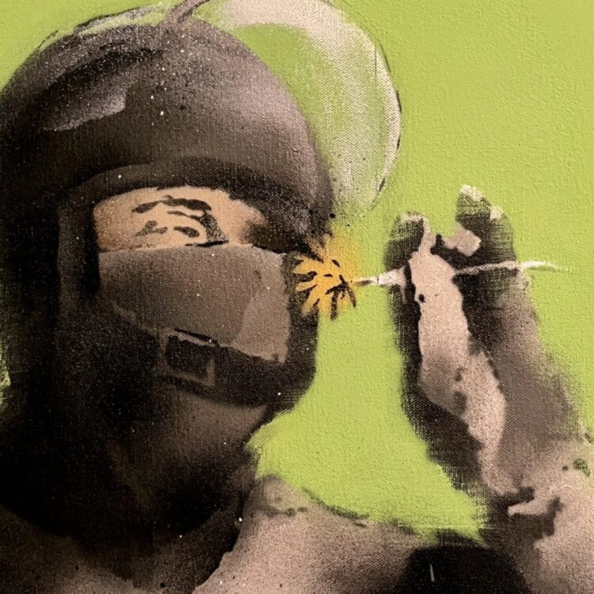
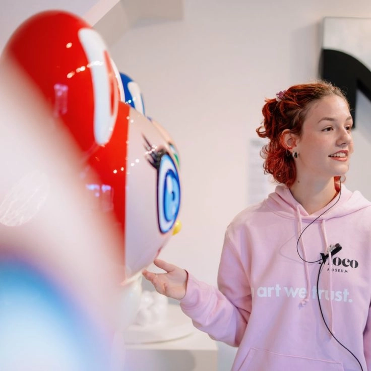
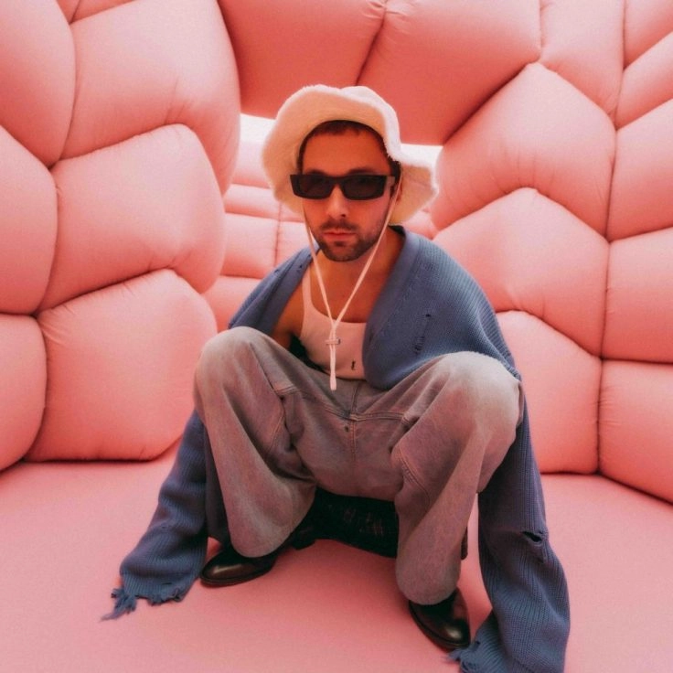
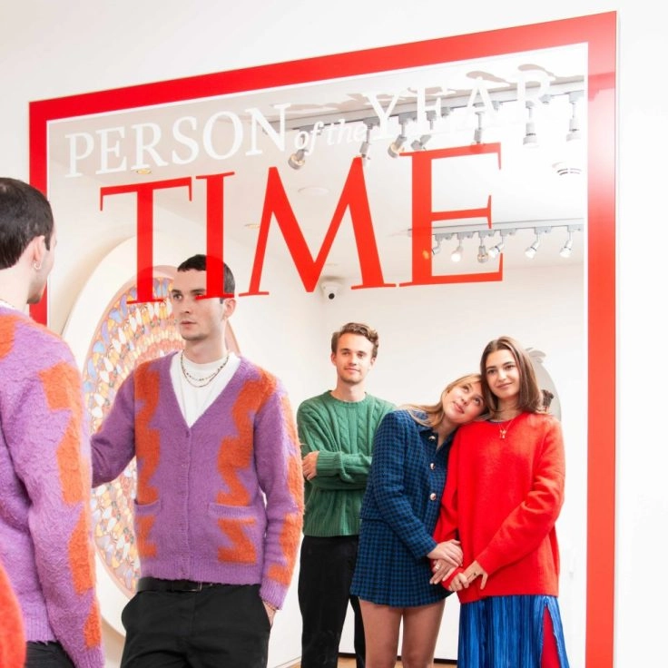
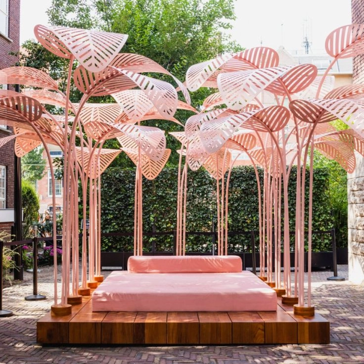
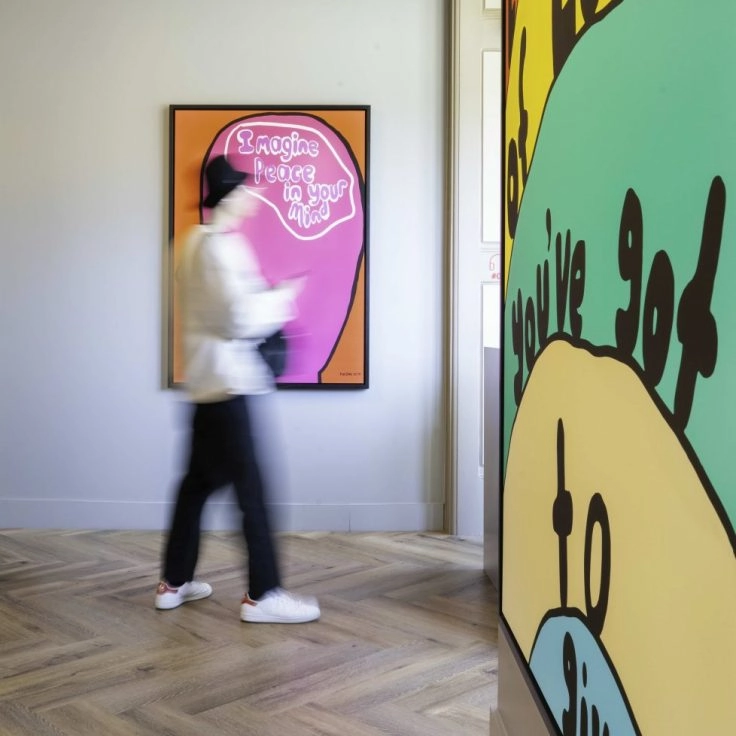
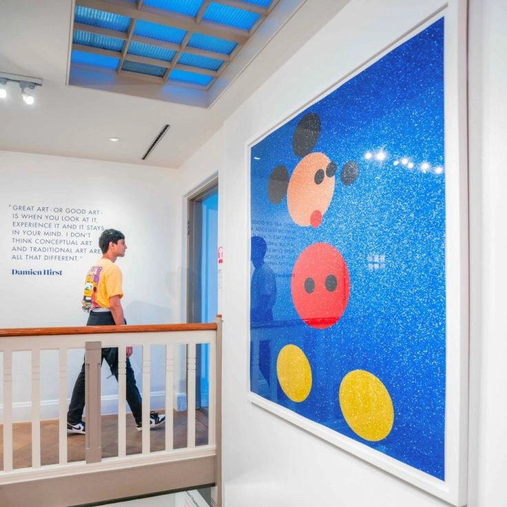
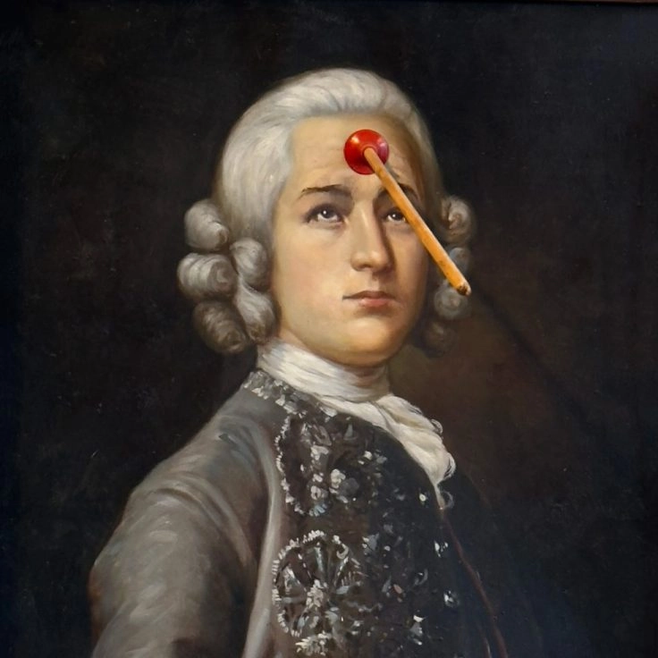
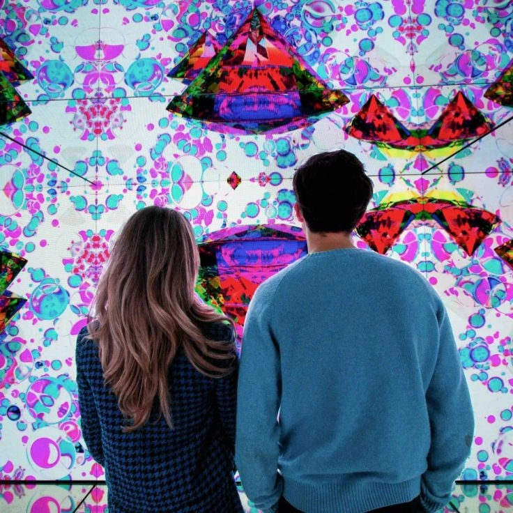
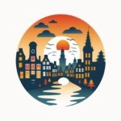

Moco Museum: Modern Art Museum in Amsterdam
A unique collection of over 100 modern, contemporary, digital and immersive works of art!
Get Tickets-
Art for Everyone
-
6M+ Visitors Globally
-
Unique Immersive Collection
-
Rated 4.5/5 ⭐️
What is Moco Museum?
Step into the world of Moco. See iconic works from Warhol, Haring, Banksy, Basquiat, Kusama, and many more.
Discover one of Amsterdams most visited modern art museums showcasing contemporary, immersive, and digital art experiences, offering visitors a unique perspective on global and local artists.
Since opening its doors in 2016, this art museum in Amsterdam has become a cultural hotspot, showcasing iconic masterpieces from renowned modern and contemporary artists alongside cutting-edge works by emerging talents.
Get TicketsModern Art Museum in Amsterdam
The modern contemporary museum of Amsterdam, Moco Museum, showcases the groundbreaking vision of iconic 20th-century artists who reshaped the art world.
Experience the collection at Moco Museum Amsterdam and discover why this modern art museum in Amsterdamis a highlight for visitors worldwide.
Featured Artist in Amsterdam
See all Artists Photo's
- 
- 
- 
- 
- 
- 
- 
- 
Media Reviews
-
Cande Nast Traveler
This edgy contemporary art venue boasts an impressively large Banksy collection.
-
Tripadvisor
With a surprise at every corner and colourful, immersive art installations, Moco Museum is the perfect place to visit with family, and equally the perfect place to visit with friends.
-
Amsterdam loco
Personal experiences can vary, but many visitors find the museum surprisingly engaging. The atmosphere is relaxed, making it a great spot for both art aficionados and those just looking to enjoy something different.
